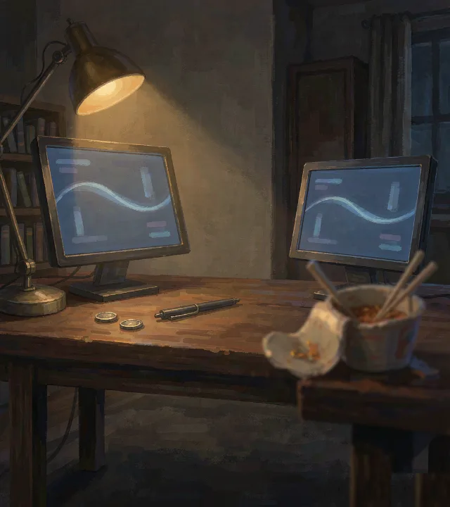

你只有一只票，它甚至没有名字。
右滑 = 投入 / 认了 · 左滑 = 抽身 / 算了

右滑＝照做 · 左滑＝推掉
次数＝再来一局的资格，每天免费 3 次
右滑＝照做 · 左滑＝推掉
四条命：心态、风险、社会、精力——任何一条归零（或风险打满）都直接结算这一局。
金钱：现金 + 持仓 − 负债。每月 5 号发薪并扣房租水电，有欠款则同日自动还月供。
借钱：现金不够会自动欠下（记进负债），负债顶到额度就没人再借你——那是一个结局。
行情：你只有一只票。泡沫、冬天、停牌都会来；K 线右上角的标签是它今天的涨跌。
死掉或达成的那一局，会点亮这里的一格。图鉴只记录，不评判。
任务每天零点刷新，奖励是「再来一局」的次数。原型先按这个节奏发，上线后接真实广告位。